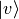
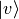
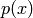

Operators¶
Introduction¶
The domain of the operator  is
is  , a subspace of the Hilbert space
, a subspace of the Hilbert space
 .
Linear operator is:
.
Linear operator is:

for all  .
Symmetric operator is:
.
Symmetric operator is:

for all dense in .
If is dense in , then the adjoint operator  is
defined by
is
defined by

for all  . The domain
. The domain  is given by all
 for which the above relation holds. It can be shown that
is given by all
 for which the above relation holds. It can be shown that
 .
.
Operator is self-adjoint if  .
Symmetric operator is self-adjoint only if
.
Symmetric operator is self-adjoint only if  . (Bounded
symmetric operator is always self-adjoint.)
Hermitean operator is a bounded symmetric operator.
. (Bounded
symmetric operator is always self-adjoint.)
Hermitean operator is a bounded symmetric operator.
Hermitian implies self-adjoint implies symmetric, but all converse implications are false. Below, we need the operator to be self-adjoint (we assume unbounded by default).
Spectrum¶
To obtain a spectrum of the operator , we need to solve the following
problem:

Those values of  for which the solution
for which the solution  belong to the discrete part of the spectrum. are called eigenvalues
and
belong to the discrete part of the spectrum. are called eigenvalues
and  eigenvectors.
Those values of for which can be normalized
to a delta function:
eigenvectors.
Those values of for which can be normalized
to a delta function:

belong to the continuous part of the spectrum (note that in this case
 ).
).
Eigenvectors belonging to the continous part of the spectrum obey the completeness relation:

Eigenvectors belonging to the discrete part obey the following completeness relation:

The sum or integral runs over the whole spectrum (if the spectrum contains both discrete and continous part, we simply combine sums and integrals).
Spectrum of a self-adjoint operator is real, because

The eigenvectors are orthogonal:

So for  we get
we get  ,
for
,
for  the
the  is equal to 1 if
belongs to the discrete spectrum and we get:
is equal to 1 if
belongs to the discrete spectrum and we get:

or it is normalized as a delta function if it belongs to the continous part:
As such, eigenvectors of a self-adjoint operator are complete and orthogonal in the above sense. Thus any function from the space can then be expanded into the series:

where  are the eigenvectors and the
coefficients
are the eigenvectors and the
coefficients  are given by:
are given by:

The sum over runs over the whole spectrum (i.e. it becomes an
integral over the continuos parts). Also the coefficients
are either discrete or continous depending on the part of the spectrum.
The series converges in the norm, i.e. the following norm goes to zero as we
sum over :

Derivative Operator¶
We have the eigenvalue problem

where

The operator is unbounded.
is self-adjoint if:

So
![\int_a^b u^*(x) A v(x) \d x
= \int_a^b u^*(x) \left(-i {\d \over \d x}\right) v(x) \d x =
= \int_a^b \left(i {\d \over \d x} u^*(x) \right) v(x) \d x
-i[u^*(x) v(x)]^b_a =
= \int_a^b \left(-i {\d \over \d x} u(x) \right)^* v(x) \d x
-i[u^*(x) v(x)]^b_a =
= \int_a^b (A u(x))^* v(x) \d x -i[u^*(x) v(x)]^b_a](../../_images/math/923c1b1d5aaf7934479125ade4556841675d5d47.png)
The operator is self-adjoint if and only if ![[u^*(x) v(x)]^b_a=0](../../_images/math/5d104d10db380d1b8f3a4579fb2367d0f5017147.png) .
Few boundary conditions that satisfy this condition:
.
Few boundary conditions that satisfy this condition:
- Dirichlet boundary conditions

- Periodic boundary conditions

- Antiperiodic boundary conditions

Solving the eigenproblem:

Fourier Series¶
We restrict our space to periodic functions. Applying the periodic boundary condition:

so

The normalized eigenvectors are:

These eigenvectors belong to our space and as such all
 form a discrete spectrum. Other solutions
do not satisfy the periodic boundary condition and so there is no continous
part in the spectrum.
form a discrete spectrum. Other solutions
do not satisfy the periodic boundary condition and so there is no continous
part in the spectrum.
The eigenvectors must be orthogonal, as we can check:
![\int_a^b u_n^*(x) u_m(x) \d x =
= \int_a^b
{1\over\sqrt{b-a}} e^{-i {2\pi n\over b-a} x}
{1\over\sqrt{b-a}} e^{i {2\pi m\over b-a} x}
\d x =
= {1\over b-a} \int_a^b
e^{i {2\pi (m-n)\over b-a} x}
\d x =
= \begin{cases}
{1\over b-a} \int_a^b e^{0} \d x & \mbox{for } m = n \\
{1\over i 2\pi (m-n) } \left[e^{i {2\pi (m-n)\over b-a} x}\right]^b_a &
\mbox{for } m \ne n \\
\end{cases} =
= \begin{cases}
1 & \mbox{for } m = n \\
{1\over i 2\pi (m-n) } \left(
e^{i {2\pi (m-n)\over b-a} b}-e^{i {2\pi (m-n)\over b-a} a}\right) &
\mbox{for } m \ne n \\
\end{cases} =
= \begin{cases}
1 & \mbox{for } m = n \\
{e^{i {2\pi (m-n)\over b-a} a}\over i 2\pi (m-n)} \left(
e^{i {2\pi (m-n)\over b-a} (b-a)}-1\right) &
\mbox{for } m \ne n \\
\end{cases} =
= \begin{cases}
1 & \mbox{for } m = n \\
0 & \mbox{for } m \ne n \\
\end{cases} =
\delta_{mn}](../../_images/math/c3b73e70d605da7b3c642df94d42819d74d574b5.png)
The eigenvectors must be complete:

Any function  can then be expanded on the interval
can then be expanded on the interval ![[a, b]](../../_images/math/da2e551d2ca2155b8d8f4935d2e9757722c9bab6.png) into the
Fourier series:
into the
Fourier series:

Equivalently, this can be written using  and
and  directly:
directly:

By introducing the coefficients  and
and  :
:

we can write the series as:

we get:

Fourier Transform¶
Our domain is  , so the solution of the eigen problem is:
, so the solution of the eigen problem is:
The normalized eigenfunctions are:

We calculate the normalization:

So the spectrum is continous. The eigenvectors must be complete:

Any function can then be written as:

where  is called the Fourier transform of :
is called the Fourier transform of :

Sturm–Liouville Operator¶
The Sturm-Liouville operator  is:
is:

Everything is real.
The scalar product is weighted by  . The operator is self-adjoint if:
. The operator is self-adjoint if:

so
![\int_a^b u(x) L v(x) w(x) \d x =
= \int_a^b u(x) {1 \over w(x)} \left(-{\d\over \d x}
\left(p(x){\d v(x)\over dx}\right) +q(x) v(x) \right)
w(x) \d x =
= \int_a^b \left(-u(x) {\d\over \d x}
\left(p(x){\d v(x)\over dx}\right) + u(x) q(x) v(x) \right)
\d x =
= \int_a^b \left({\d u(x)\over\d x} p(x){\d v(x)\over dx}
+ u(x) q(x) v(x) \right) \d x
-\left[u(x)p(x){\d v(x)\over dx}\right]^b_a
=
= \int_a^b \left(-{\d\over \d x} \left(p(x) {\d u(x)\over\d x}\right) v(x)
+ u(x) q(x) v(x) \right) \d x
-\left[u(x)p(x){\d v(x)\over dx}-{\d u(x)\over dx}p(x)v(x)\right]^b_a
=
= \int_a^b \left(L u(x)\right) v(x) w(x) \d x
-\left[u(x)p(x){\d v(x)\over dx}-{\d u(x)\over dx}p(x)v(x)\right]^b_a](../../_images/math/a1fe8945017333b9f05aaa52b48688fedd97a05a.png)
And the operator is self-adjoint if and only if:
![\left[u(x)p(x)v'(x)-u'(x)p(x)v(x)\right]^b_a = 0](../../_images/math/f90ff0bf14b4b8f377767987eed667eca9932b35.png)
This condition can be satisfied by various boundary conditions. For example:
- Dirichlet boundary conditions
- Neumann boundary conditions

- Periodic boundary conditions

- Antiperiodic boundary conditions

or mixtures of these, e.g. Dirichlet at  and Neumann at
and Neumann at  .
.
Legendre Polynomials¶
Legendre polynomials  are solutions of the Sturm–Liouville problem on
the interval
are solutions of the Sturm–Liouville problem on
the interval ![[-1, 1]](../../_images/math/5c3818b9565a33fd3aadba10026d32c5e3eea90f.png) with
with  ,
,  ,
,  and
and
 :
:

The operator is self-adjoint due to vanishing  at
the endpoints:
![\left[(u(x)v'(x)-u'(x)v(x))p(x)\right]_{-1}^1
= \left[(u(x)v'(x)-u'(x)v(x))(1-x^2)\right]_{-1}^1 = 0](../../_images/math/b1b4f8a9eda4b7deb7cf2500e7fbe16816b9050f.png)
We restrict our space to bounded functions. The solutions of the eigenvalue
problem for integer  are Legendre polynomials , the normalized
eigenvectors
are Legendre polynomials , the normalized
eigenvectors  are:
are:

Solutions for non
integer are Legendre functions that are singular at the end points and as
such are not solutions that we want. As such, the spectrum is discrete and the
Legendre polynomials form a complete orthogonal basis for functions
on the interval :

any function on the interval can be expanded as: